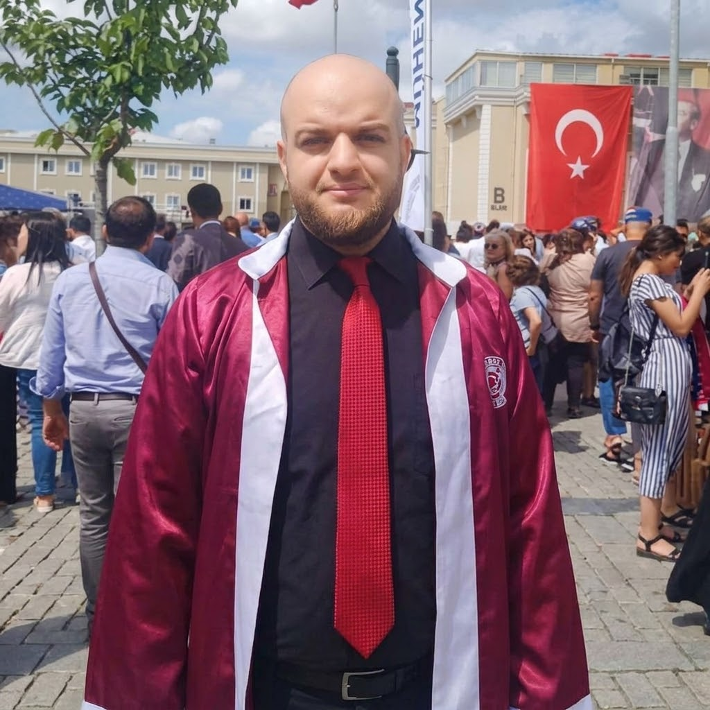

Majdi Mustafa Nema
1. Early Life and Arbitrary Detention Under Assad
Born in 1988 into an educated family (his father worked in the medical sector and his mother in education), Majdi completed his secondary education at an elite high school in Idlib before attending a medical institute. In 2009, at age 21, he was arrested by Assad's military intelligence and held at the notorious "Palestine Branch" in Damascus until 2010. His elder brother, Dr. Mohammad Nema, was imprisoned for five years in Saydnaya Military Prison. Following his release, Majdi was conscripted into mandatory military service.
2. University Excellence & Erasmus European Mobility
Following his departure from Syria to Turkey in May 2013, Majdi resumed his academic studies. In October 2015, he enrolled in the Department of Political Science and International Relations at Istanbul Aydın University, graduating in 2017 with high honors and ranking second in his graduating class.
Awarded an Erasmus scholarship, he completed a semester of studies in 2018 at Eötvös Loránd University (ELTE) in Budapest, Hungary. He traveled legitimately across Europe on an academic student visa before returning to Istanbul to pursue postgraduate research.
3. Founding the Toran Center & Research Fellowship in France
In Istanbul, Majdi co-founded and directed the Toran Center for Political and Strategic Studies, producing policy papers, objective mapping, and strategic analyses on the Middle East.
In late 2019, invited by a French professor to collaborate on a scientific project, he was granted an official long-stay scientific visa by the French Consulate in Istanbul. He was hosted as a visiting researcher at the Institute of Research and Study on the Arab and Islamic World (IREMAM) at Aix-Marseille University.
4. Demarcation of Former Media Role & Definitive Resignation (2017)
- Media Spokesperson, Not Military Commander: Defecting from the regime military during the peaceful revolution, he was assigned to public relations due to his fluency in English, adopting the pseudonym "Islam Alloush" to shield his family from reprisals[cite: 14].
- Departure from Ghouta in May 2013: In spring 2013, the media desk was relocated to Turkey[cite: 14]. Majdi left Eastern Ghouta permanently in May 2013 and never returned[cite: 14]. In 2014, local battlefield spokespersons were appointed inside Syria, diminishing his external communications duties.
- Humanitarian Law Engagement: Operating from Turkey, he coordinated training workshops on the Geneva Conventions and civilian protection with the Swiss NGO Geneva Call.
- Official Resignation on June 2, 2017: Through a public communiqué, he severed all affiliations with Jaysh al-Islam, dropped his pseudonym, and resumed his legal identity to focus entirely on scholarship[cite: 15].
- Humanitarian Mediation: Post-resignation, he acted as an intermediary to secure the release of civilian hostages from the Druze minority abducted by the Nusra Front.